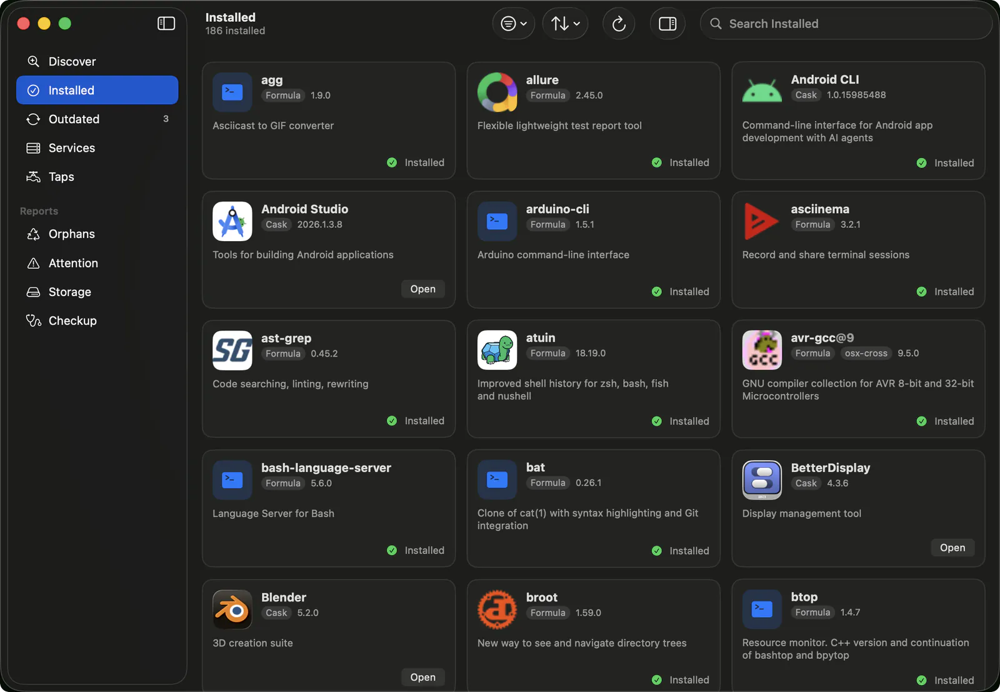
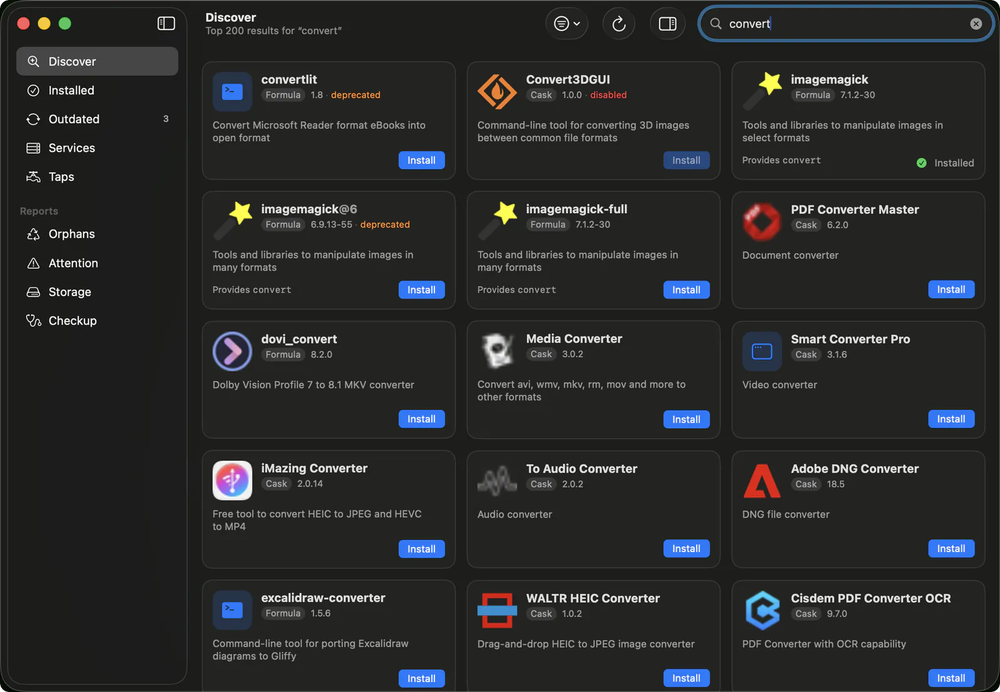
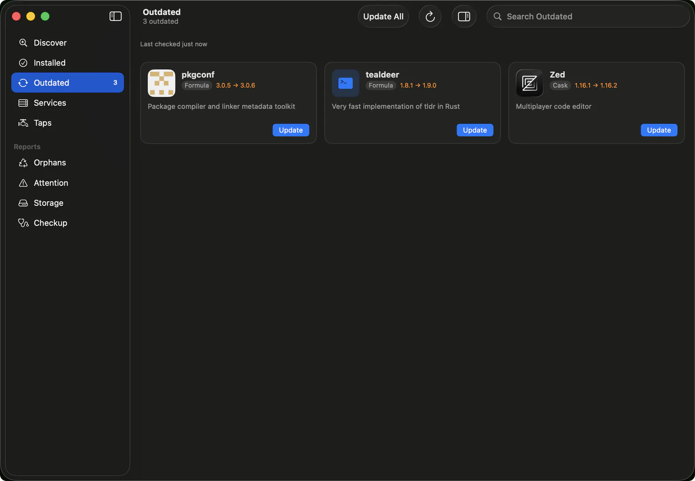
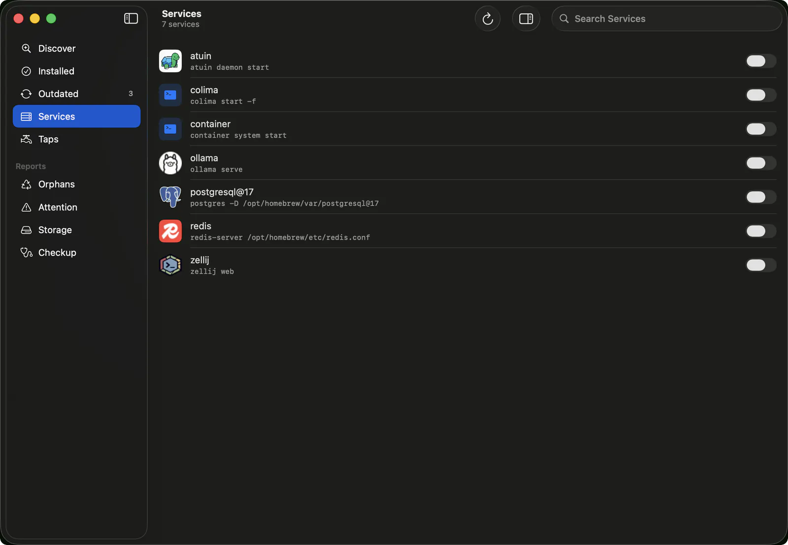
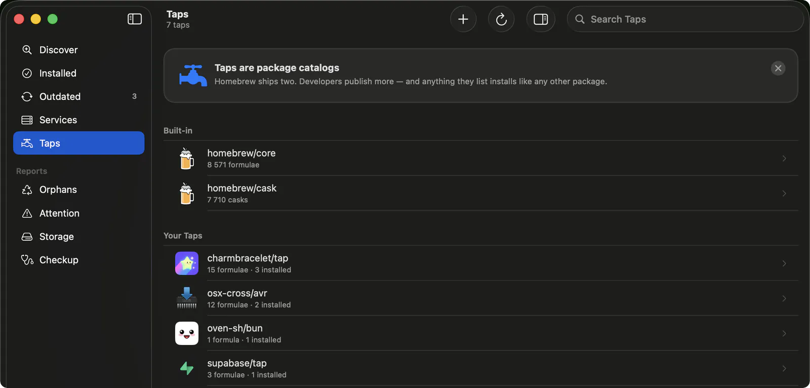
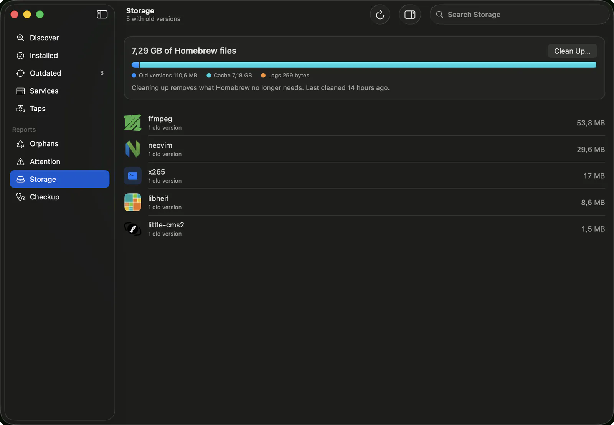
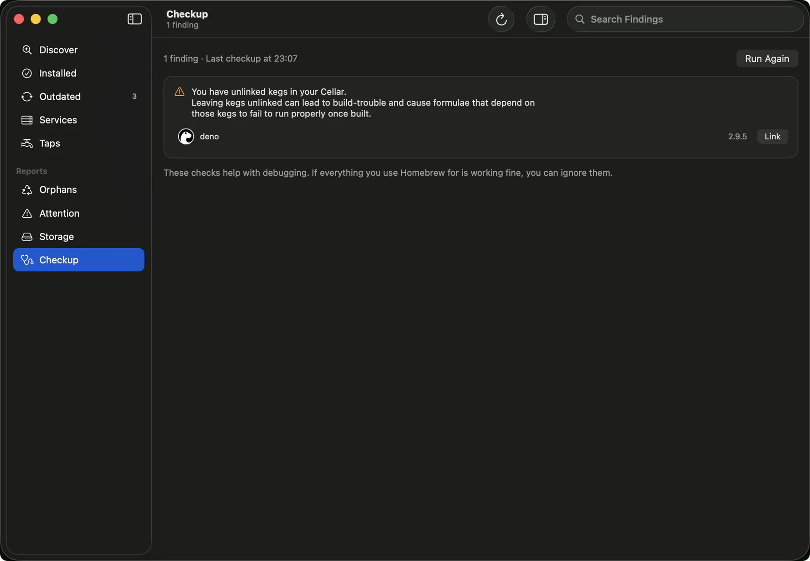
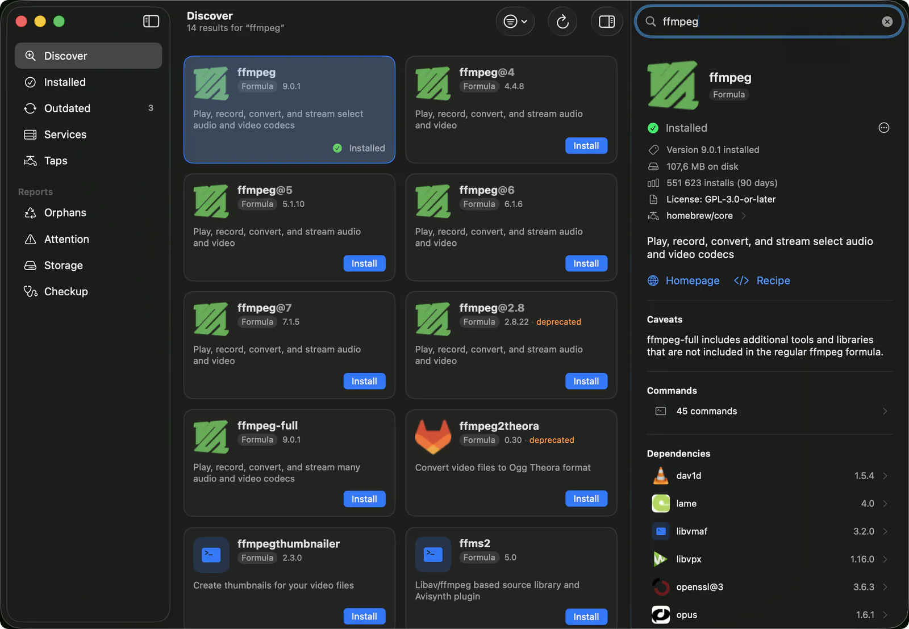
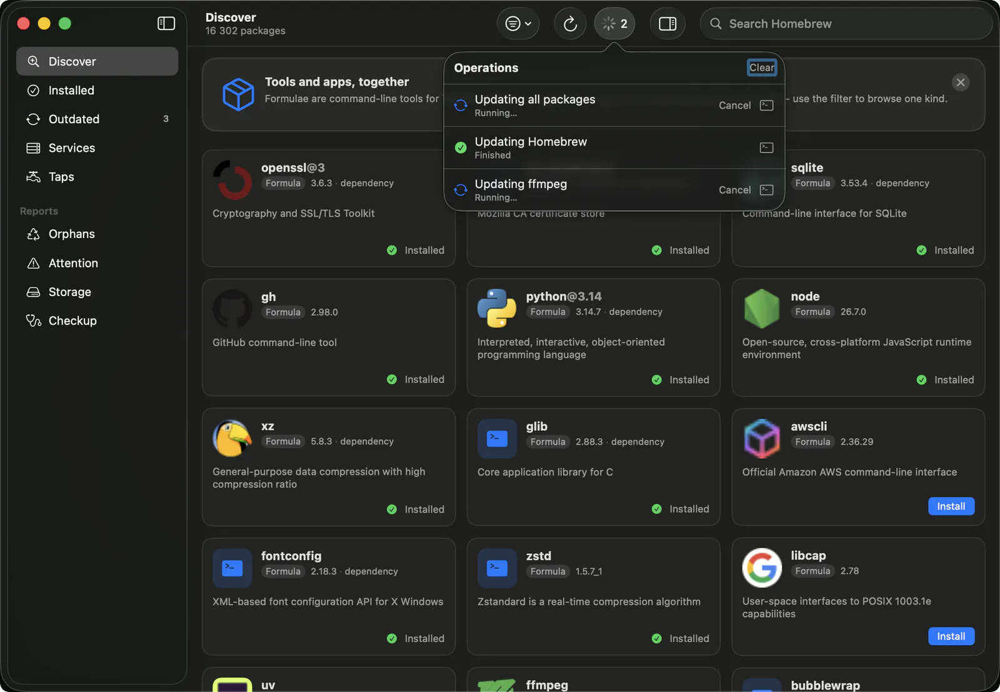

Installed
Every package Homebrew has installed on your Mac. Sort by name, install date or size on disk, and hide the ones that came in as dependencies.

Brewery uses the Homebrew you already have. Search for packages, install and update them, run services, and see how much disk Homebrew is taking up, without opening a terminal.

Sections
These are the same sections as the app's sidebar.
Every package Homebrew has installed on your Mac. Sort by name, install date or size on disk, and hide the ones that came in as dependencies.

Brewery refreshes Homebrew's data before it draws this list, so it won't be out of date. You can update one package or all of them at once.

Some packages run in the background, like databases and local servers. The switch starts and stops one, and a service you start comes back after a restart.

A tap is a list of packages that someone publishes, and Homebrew includes two of them. If you've added others, Brewery searches those too and shows how many packages from each you have installed.

Homebrew keeps old versions, downloaded files and logs around. Clean Up deletes the ones it no longer needs and leaves your installed packages alone.

This runs Homebrew's own self-check, then lists each problem it finds with an explanation. Problems with a known fix get a button.

Selecting a package opens its details beside the list instead of replacing it. You get the version, size on disk, license, dependencies and, for an app, what it installs.

Installs, updates and removals run one at a time. You see Homebrew's output as it goes, and you can cancel a job before it finishes.

Installing
There's no signed download yet, so you build it yourself. You need Xcode and Homebrew.
$ git clone https://github.com/metafates/Brewery.git
$ cd Brewery
$ make installmake install puts Brewery in your Applications folder. make run builds it and opens it without installing.